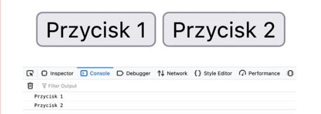

Ćwiczenie praktyczne 10.7
Utwórz prosty dokument HTML z przyciskiem, któremu dodaj atrybut onclick.
W tym ćwiczeniu pokażemy, jak za pomocą this można odwołać się do obiektu
danych.
-
W kodzie JavaScript utwórz funkcję przeznaczoną do obsługi kliknięcia.
Możesz jej nadać nazwę message.
-
Dodaj this do parametrów funkcji atrybutu onclick w celu przekazania za
pomocą this obiektu danych bieżącego elementu.
-
W funkcji message użyj wywołania
console.dir() do
wyświetlenia w konsoli obiektu danych elementu przekazanego funkcji za
pomocą atrybutu onclick i słowa kluczowego this.
- Na stronie umieść drugi przycisk wywołujący tę samą funkcję.
-
Po kliknięciu przycisku w konsoli powinien zostać wskazany element,
który spowodował to kliknięcie, jak pokazaliśmy na rysunku 10.1.
